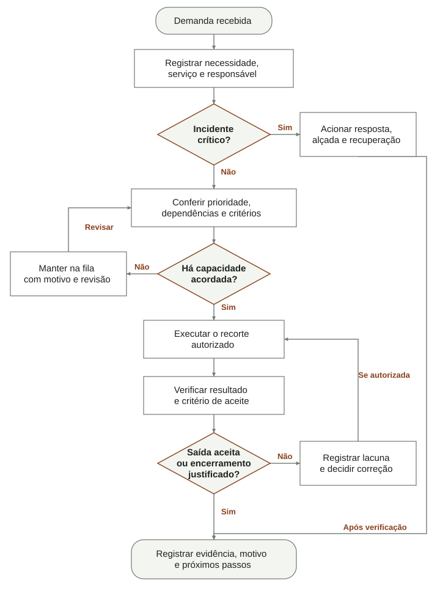
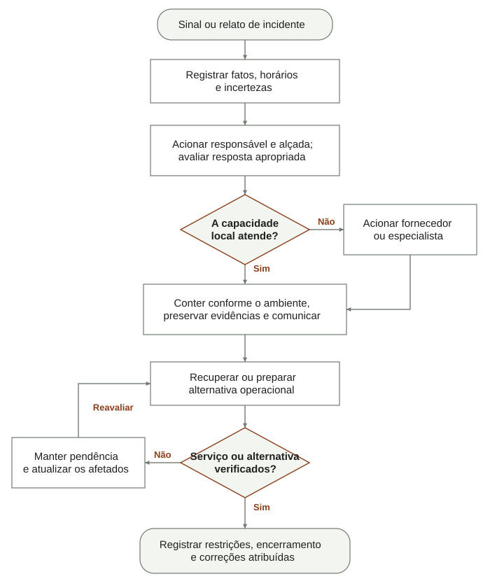

Fluxogramas de decisão e execução
Os fluxos abaixo tornam visíveis decisão, execução, espera e retorno. Retângulos são ações; losangos são decisões; formas arredondadas delimitam entrada ou encerramento. “Sim” e “não” identificam o caminho escolhido. Eles resumem práticas locais do GEAR, sem substituir os critérios e alçadas dos guias.
Da demanda ao encerramento

- Receber e registrar necessidade, serviço e responsável. Uma emergência é atendida e registrada assim que viável.
- Se houver incidente crítico, acionar resposta e autoridade apropriadas. Encerrar somente após a verificação descrita no guia de incidentes.
- Para a fila comum, conferir prioridade, dependências e critérios. Contar andamento, teste e bloqueio comprometido na capacidade por executor.
- Se não houver capacidade acordada, manter motivo e revisão na fila. Retomar a decisão quando houver mudança de prioridade, dependência ou capacidade.
- Executar o recorte autorizado e verificar a saída. Se houver lacuna, registrar e decidir a correção; o retorno à execução depende de autorização e capacidade.
- Registrar evidência, motivo de encerramento e próximos passos. Cancelamento ou outra forma de encerramento precisa de justificativa, sem se apresentar como entrega aceita.
Bloqueio ou suspensão conserva histórico e relógio; o diagrama não autoriza ocultar trabalho iniciado para liberar WIP. Para critérios completos: priorizar demandas, execução e serviços e entregar melhoria.
Resposta e recuperação

- Registrar fatos, horário e incertezas; acionar responsável e autoridade sem aguardar causa confirmada.
- Se a capacidade local for insuficiente, acionar fornecedor ou especialista pelos contatos conferidos. A resposta depende do ambiente e da alçada, com preservação de evidências.
- Comunicar fatos verificados e próxima atualização. Recuperar o serviço ou preparar uma alternativa operacional.
- Se a verificação com o dono do processo falhar, manter pendência, atualizar os afetados e reavaliar a recuperação. Uma alternativa aceita não significa que o serviço original voltou.
- Registrar limitações, encerramento e correções atribuídas. Investigar causa e prevenção em tarefas ligadas ao incidente, quando necessário.
O fluxo não prescreve isolamento, desligamento ou formatação universais. Critérios, contatos e obrigação de comunicação permanecem no guia de incidentes e no plano breve. Fundamentos: NIST F01, F02 e CISA F12; a sequência gráfica é uma adaptação local.
As figuras são vetoriais. Na tela pequena, a região permite rolagem horizontal e os passos textuais conservam o conteúdo para leitura. A imagem de rotina diária fornecida pelo usuário orientou as formas e as ramificações; suas atividades não fazem parte do método.